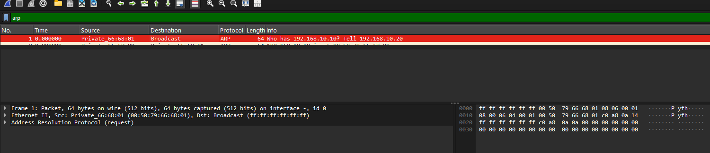
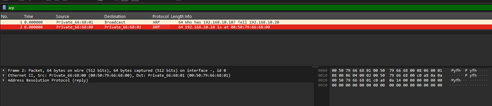
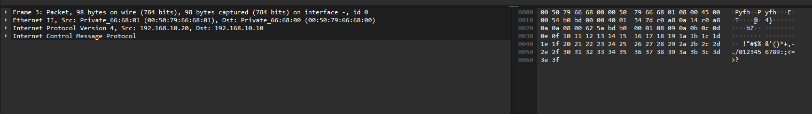
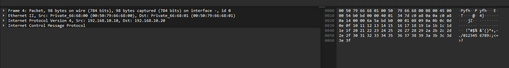
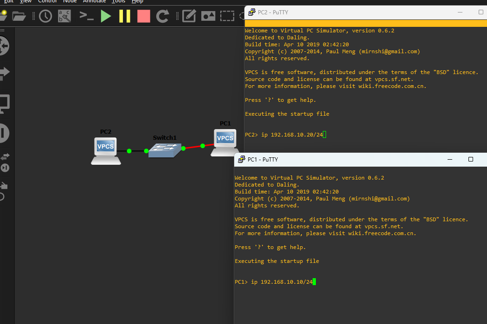

Аннотация: в этой лабораторной работе студент подготавливает учебную среду GNS3 и Wireshark, собирает первый минимальный сетевой стенд, выполняет первый захват трафика и на практике наблюдает, как связаны канальный и сетевой уровни при обмене ARP и ICMP.
Утро началось подозрительно спокойно. Ты заходишь в лабораторию МАИ с надеждой, что сегодня всё ограничится теорией и парой безобидных определений про OSI. Но на столе уже открыт GNS3, рядом запущен Wireshark, а преподаватель с таким довольным видом произносит фразу «сейчас соберём самый простой стенд», что сразу становится ясно: лёгкой жизни больше не будет.
Сначала кажется, что задача совсем простая: два виртуальных узла, один коммутатор, один
ping. Но именно на таких «простых» вещах сеть и любит показывать характер. Перед первым ICMP-эхо внезапно появляется ARP, кадры начинают жить своей жизнью, а Wireshark требует не просто смотреть, а понимать, что именно ты видишь. Поэтому первая лабораторная и нужна как нормальная точка входа: без спешки собрать минимальную сеть, увидеть базовые протоколы в деле и начать воспринимать сетевой обмен не как магию, а как последовательность вполне конкретных действий.
Целью лабораторной работы является получение первичных практических навыков работы со средами GNS3 и Wireshark, построение простейшего виртуального сетевого стенда, выполнение первого захвата трафика и анализ обмена данными на канальном и сетевом уровнях.
В результате выполнения лабораторной работы студент должен уметь:
ping;ARP Request, ARP Reply,
ICMP Echo Request и ICMP Echo Reply;Как работать с лабораторной:
Как оформлять результат:
Ethernet, ARP, IP,
ICMP, MAC-адрес, IP-адрес,
broadcast, unicast следует использовать
корректно и по смыслу.Компьютерные сети являются сложными системами, в которых одновременно взаимодействуют разнородное оборудование, разные операционные системы, различные среды передачи данных и множество программных протоколов. Именно поэтому в теории сетей применяется принцип декомпозиции: общая задача связи разбивается на несколько более простых подзадач, каждая из которых решается на своём уровне.
Многоуровневый подход позволяет упростить проектирование сетей, разделить функции между независимыми частями системы, обеспечить совместимость оборудования и программного обеспечения разных производителей, а также облегчить сопровождение и развитие сетевой инфраструктуры.
В теории сетей различают три фундаментальных понятия:
В сетевых технологиях широко используются две модели: модель OSI и модель TCP/IP.
Модель OSI является эталонной семиуровневой моделью. Она используется как теоретическая основа для описания сетевого взаимодействия. В ней выделяют физический, канальный, сетевой, транспортный, сеансовый, представительский и прикладной уровни.
Модель TCP/IP является практически применяемой моделью, лежащей в основе современных сетей и Интернета. В упрощённом виде в ней выделяют уровень доступа к сети, уровень межсетевого взаимодействия, транспортный и прикладной уровни.
Для данной лабораторной работы особенно важны нижние уровни. На канальном уровне используются кадры и MAC-адреса, на сетевом уровне используются пакеты и IP-адреса. В рамках первой лабораторной работы студент непосредственно наблюдает Ethernet как технологию канального уровня, IPv4 как протокол сетевого уровня и ICMP как служебный протокол, работающий поверх IP.
Одним из ключевых понятий лабораторной работы является инкапсуляция. Инкапсуляция означает, что данные верхнего уровня передаются не сами по себе, а вкладываются в блок данных нижнего уровня.
Например, при отправке команды ping сначала формируется
сообщение ICMP Echo Request, затем оно помещается внутрь
IP-пакета, а затем IP-пакет помещается внутрь Ethernet-кадра. Именно
поэтому при анализе одного и того же кадра в Wireshark можно
одновременно увидеть поля Ethernet, затем IP и затем ICMP.
Наблюдение инкапсуляции связывает теорию уровней сети с реальным анализом трафика. Это одна из главных идей лабораторной работы: студент должен увидеть не только конечный результат, но и внутреннее устройство сетевого обмена.
В данной лабораторной работе используется Ethernet как технология локальной сети. На канальном уровне данные передаются в виде кадров. Кадр Ethernet II содержит несколько ключевых полей:
| Поле | Назначение |
|---|---|
Destination MAC |
MAC-адрес назначения |
Source MAC |
MAC-адрес источника |
EtherType |
тип вложенного протокола |
Payload |
полезная нагрузка |
FCS |
контрольная последовательность кадра |
Поле EtherType показывает, какой протокол вложен в кадр.
Например, значение 0x0806 соответствует ARP, а
значение 0x0800 соответствует IPv4.
Коммутатор работает на канальном уровне и принимает решение о пересылке кадра, ориентируясь на MAC-адрес назначения. Следовательно, до передачи IP-пакета по локальной сети узел должен сначала узнать MAC-адрес получателя.
MAC-адрес является адресом сетевого интерфейса на канальном уровне. Он используется для доставки кадров в пределах локального сегмента сети. В Ethernet обычно применяется 48-битный MAC-адрес, записываемый в шестнадцатеричном виде.
IP-адрес является логическим адресом узла на сетевом уровне. Он нужен для идентификации узла в пределах сети или между сетями. В данной лабораторной работе используется IPv4-адресация.
Принципиальная разница между этими адресами такова:
Именно поэтому перед отправкой IP-пакета по Ethernet узел должен определить соответствующий MAC-адрес получателя.
ARP (Address Resolution Protocol) используется для
определения MAC-адреса по известному IP-адресу в пределах локальной
сети.
Если узел знает IP-адрес получателя, но не знает его MAC-адрес, он
отправляет ARP Request. Такой запрос передаётся в
широковещательном Ethernet-кадре, поскольку отправителю пока неизвестно,
на какой конкретный MAC-адрес нужно направить запрос. Узел, которому
принадлежит искомый IP-адрес, отвечает сообщением
ARP Reply, где сообщает свой MAC-адрес.
Таким образом, ARP обеспечивает связь между логической IP-адресацией и фактической передачей кадров Ethernet.
В захвате Wireshark обмен ARP выглядит как короткий предварительный
этап перед полезным обменом данными. Именно поэтому перед первым
ping внутри подсети обычно наблюдаются сначала
ARP Request и ARP Reply, а уже затем кадры с
ICMP.


IP (Internet Protocol) является основным протоколом
сетевого уровня. Он используется для логической адресации и межсетевой
доставки пакетов. Внутри IP-пакета могут передаваться данные различных
протоколов верхнего уровня.
ICMP (Internet Control Message Protocol) является
служебным протоколом сетевого уровня. В лабораторной работе он
используется через команду ping, которая генерирует
сообщения:
ICMP Echo Request;ICMP Echo Reply.Успешный обмен такими сообщениями подтверждает наличие сетевой
связности между узлами. Важно понимать, что ping не
отменяет необходимость работы ARP: если MAC-адрес ещё не известен,
сначала выполняется ARP-разрешение, и только затем передаётся
ICMP Echo Request.


После изучения теоретического материала студент должен понимать:
ping;Ethernet -> IPv4 -> ICMP.GNS3 (Graphical Network Simulator-3) является
программной средой для эмуляции, конфигурирования, тестирования и
отладки виртуальных и реальных сетей. Она позволяет собирать сетевые
стенды из виртуальных устройств, соединять их между собой, запускать,
останавливать и анализировать их поведение.
В данной лабораторной работе GNS3 используется для построения простейшего стенда из двух узлов и одного коммутатора.
Основные элементы интерфейса GNS3:
| Элемент | Назначение |
|---|---|
| Список устройств | выбор доступных сетевых узлов |
| Рабочая область проекта | размещение и соединение устройств |
| Панель управления | запуск, остановка и перезапуск узлов |
| Консоль устройства | окно работы с конкретным узлом |
| Контекстное меню | доступ к настройке, захвату и дополнительным действиям |

VPCS (Virtual PC Simulator) представляет собой лёгкий
виртуальный ПК, предназначенный для учебных сетевых стендов. В данной
лабораторной работе VPCS используется как модель конечного узла.
Основные команды VPCS:
| Команда | Назначение |
|---|---|
ip <адрес>/<маска> |
назначить IP-адрес и маску |
ip <адрес>/<маска> <шлюз> |
назначить IP-адрес, маску и шлюз |
show ip |
показать текущие IP-настройки |
ping <IP-адрес> |
проверить связность с указанным узлом |
ping <IP-адрес> -c <N> |
отправить N ICMP-запросов |
arp |
вывести ARP-таблицу |
clear arp |
очистить ARP-таблицу |
save |
сохранить конфигурацию |
? или help |
вывести список доступных команд |
Ethernet Switch в GNS3 представляет собой встроенный
виртуальный коммутатор канального уровня. В рамках данной лабораторной
работы он используется как узел SW1 и обеспечивает
коммутацию кадров между PC1 и PC2.
Для базового стенда специальная настройка коммутатора не требуется: достаточно добавить его в проект и соединить соответствующими портами с узлами VPCS. Основная работа студента в этой лабораторной связана не с CLI коммутатора, а с пониманием того, как через него проходят кадры и почему на канальном уровне достаточно именно такого устройства.
Wireshark является анализатором сетевого трафика. Он позволяет выполнять захват пакетов, просматривать их состав, фильтровать трафик и исследовать поля сетевых протоколов. Программа широко применяется для диагностики сетей, обучения и исследования протоколов.
В данной лабораторной работе Wireshark используется для захвата и анализа ARP- и ICMP-кадров.
При работе с Wireshark необходимо различать три основные панели:
Именно эти элементы интерфейса должны быть видны в тех скриншотах, которые студент включает в отчёт при анализе трафика.
Полезные фильтры отображения для данной лабораторной работы:
| Фильтр | Назначение |
|---|---|
arp |
показать только ARP-кадры |
icmp |
показать только ICMP-пакеты |
ip.addr == <IP> |
отфильтровать трафик по IP-адресу |
eth.src == <MAC> |
отфильтровать трафик по MAC-адресу источника |
eth.dst == ff:ff:ff:ff:ff:ff |
показать широковещательные кадры |
Ниже приведён общий порядок установки для Windows. При использовании другой операционной системы необходимо руководствоваться официальной документацией соответствующей программы.
VPCS и
Ethernet Switch.Для простых учебных стендов, содержащих только VPCS и встроенный
Ethernet Switch, обычно достаточно локальной установки
GNS3. Для более сложных стендов может потребоваться GNS3 VM.
Npcap, если программа предложит это
сделать.После установки необходимо убедиться, что:
VPCS и Ethernet Switch;Все материалы, необходимые для сдачи и повторного просмотра лабораторной работы, включены в этот каталог:
Основные иллюстрации встроены прямо в текст отчёта выше, а полный
набор вспомогательных скриншотов находится в каталоге
screenshots.
Данные требования применяются ко всем отчётам по лабораторным работам этого цикла. В последующих лабораторных они могут не повторяться полностью, поэтому при оформлении дальнейших работ следует ориентироваться на требования, сформулированные в лабораторной работе № 1.
В отчёте должны быть:
Дополнительно необходимо учитывать следующее:
Для этого задания используется параметр A, который
вычисляется по формуле:
A = ((N - 1) mod 4) + 1Вариант адресации по параметру A:
A |
Подсеть | PC1 |
PC2 |
|---|---|---|---|
| 1 | 192.168.10.0/24 |
192.168.10.10/24 |
192.168.10.20/24 |
| 2 | 192.168.20.0/24 |
192.168.20.10/24 |
192.168.20.20/24 |
| 3 | 192.168.30.0/24 |
192.168.30.10/24 |
192.168.30.20/24 |
| 4 | 192.168.40.0/24 |
192.168.40.10/24 |
192.168.40.20/24 |
Установить GNS3 и Wireshark. Создать в GNS3 проект
LR1_First_Project. Собрать стенд
PC1 - SW1 - PC2. Узлы PC1 и PC2
должны быть выполнены на базе VPCS. Узел SW1 должен быть
выполнен с использованием встроенного Ethernet Switch
GNS3.
Назначить IP-адреса узлам PC1 и PC2 в
соответствии со значением параметра A.
В отчёт по этому заданию включить:
В составе сдаваемых материалов должны быть представлены:
PC1 - SW1 - PC2.Для этого задания используется параметр B, который
вычисляется по формуле:
B = ((N - 1) mod 3) + 1Вариант проверки связности и точки захвата по параметру
B:
B |
Направление проверки | Линк захвата |
|---|---|---|
| 1 | PC1 -> PC2 |
PC1 - SW1 |
| 2 | PC2 -> PC1 |
PC1 - SW1 |
| 3 | PC1 -> PC2 |
PC2 - SW1 |
После настройки адресов выполнить проверку связности в соответствии
со значением параметра B. Необходимо получить не менее
четырёх успешных ответов подряд. Затем нужно запустить захват трафика на
линке, определяемом параметром B, повторить ту же проверку
связности, остановить захват и сохранить файл под именем
pcap/lr1_first_capture.pcapng.
В отчёт по этому заданию включить:
В составе сдаваемых материалов должен быть представлен:
pcap/lr1_first_capture.pcapng.Для этого задания используется параметр C, который
вычисляется по формуле:
C = ((N - 1) mod 5) + 1Вариант аналитического пункта по параметру C:
C |
Аналитический пункт |
|---|---|
| 1 | Объяснить, почему ARP Request является
широковещательным кадром |
| 2 | Сравнить MAC-адрес назначения в ARP Request и
ICMP Echo Request |
| 3 | Пояснить, почему перед обменом ICMP в захвате появляется ARP |
| 4 | Показать, где в выбранном пакете заканчивается канальный уровень и начинается сетевой |
| 5 | Вручную описать инкапсуляцию одного
ICMP Echo Request |
В файле pcap/lr1_first_capture.pcapng необходимо найти
по одному кадру каждого из указанных типов и оформить результаты в
отчёте.
| Объект анализа | Что должно быть приведено в отчёте |
|---|---|
ARP Request |
номер кадра, Ethernet Source MAC,
Ethernet Destination MAC, ARP Sender IP,
ARP Target IP |
ARP Reply |
номер кадра, Ethernet Source MAC,
Ethernet Destination MAC, ARP Sender IP,
ARP Target IP |
ICMP Echo Request |
номер кадра, Ethernet Source MAC,
Ethernet Destination MAC, IP Source,
IP Destination, ICMP Type |
ICMP Echo Reply |
номер кадра, Ethernet Source MAC,
Ethernet Destination MAC, IP Source,
IP Destination, ICMP Type |
Аналитический пункт по параметру C |
пояснение в соответствии со своим вариантом |
В отчёт по этому заданию включить:
ARP Request;ARP Reply;ICMP Echo Request;ICMP Echo Reply;C;В составе сдаваемых материалов должны быть представлены:
pcap/lr1_first_capture.pcapng;